kernelrust
Slate
Monolithic and multi-core, with its own memory manager, scheduler and virtual filesystem.
A clean slate.
A new operating system, built from its first line. There is no Linux code inside it, and it runs your Linux software as it is.
These frames come straight from SlateOS's own drawing code: slate-ui, the toolkit that paints the desktop, the apps, the installer and the boot menu.
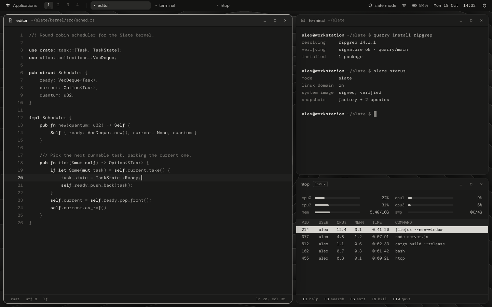
The systems we rely on carry decades of code that nobody would write the same way today. SlateOS starts over: a kernel, a shell, a desktop and a filesystem made new, in a memory-safe language, with nothing preinstalled that hasn't earned its place. It speaks Linux fluently, so everything you depend on comes with you.
The Slate kernel answers the same system calls Linux does, written from public documentation and checked against how real Linux behaves. Distro binaries, container images and desktop apps run unchanged, on a kernel that shares no lineage with the one they were built for.
By default SlateOS runs in Slate mode, which goes further than Unix ever did. Linux programs run beside it in a domain of their own, with exactly the behaviour they expect, and they can't reach past its walls.
| pid | program | domain | user |
|---|---|---|---|
| 1 | slinit | slate | root |
| 212 | slate-brokerd | slate | root |
| 304 | strata | slate | ada |
| 388 | terminal | slate | ada |
| 421 | firefox | linux | ada |
| 436 | podman | linux | ada |
| 440 | python3 | linux | ada |
Window manager and display server in one program, drawn by Slate's own toolkit. Warm graphite by default, chalk kept for what matters now, and colour only when it means something. Click around: it's live.
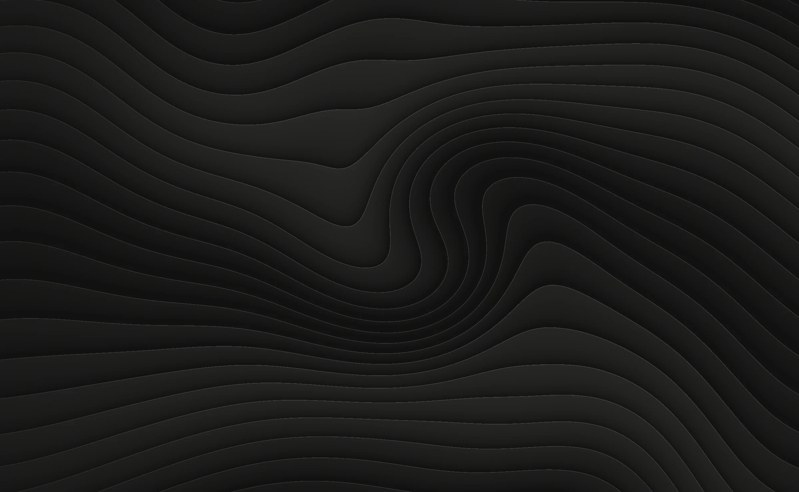
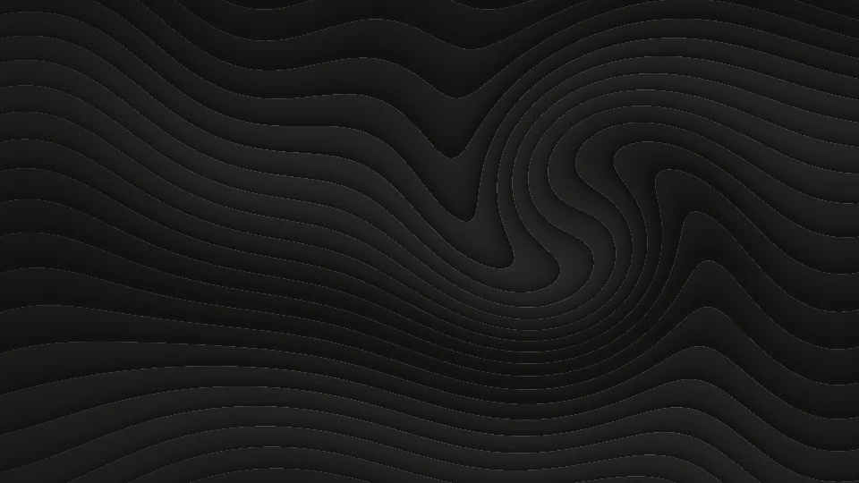
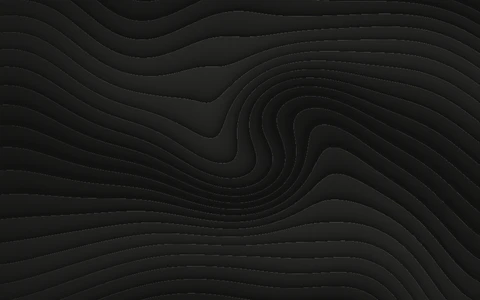
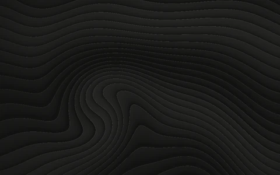
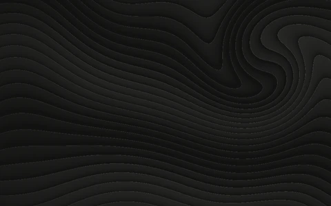
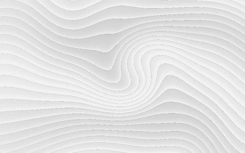
| program | domain | cpu |
|---|---|---|
| strata | slate | 1.2% |
| terminal | slate | 0.4% |
| firefox | linux | 2.9% |
| devd | slate | 0.0% |
| netd | slate | 0.0% |
| slinit | slate | 0.0% |
Graphite, Light, Copper Noir and Sediment, chosen in Settings › Appearance. Every window, app and menu follows the theme, and each one comes with wallpapers drawn to match. These are real renders, not mock-ups.
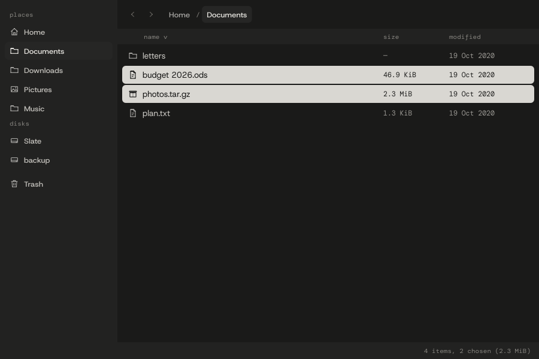
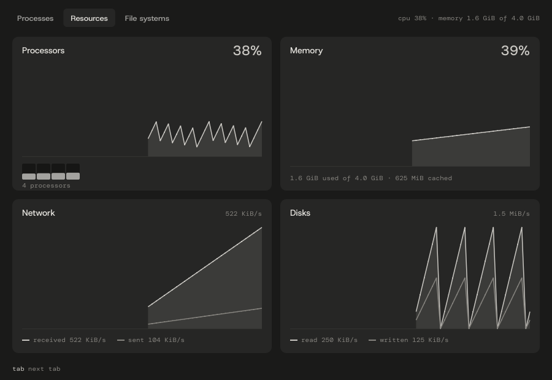
SlateOS drives the display with its own code. Every graphics card works out of the box, and on supported AMD Radeon graphics there is more: SlateOS's own AMD display driver, with your monitor at its own resolution and windows composited on the GPU.
Any card, on the framebuffer the firmware sets up, with the boot loader picking the display's native mode. Strata composites on the processor, and a 4K desktop stays smooth.
On supported integrated Radeon graphics (tested on Ryzen 7000-series "Raphael"): copies on the GPU's copy engine, blending on SlateOS's own shaders, and a hardware pointer.
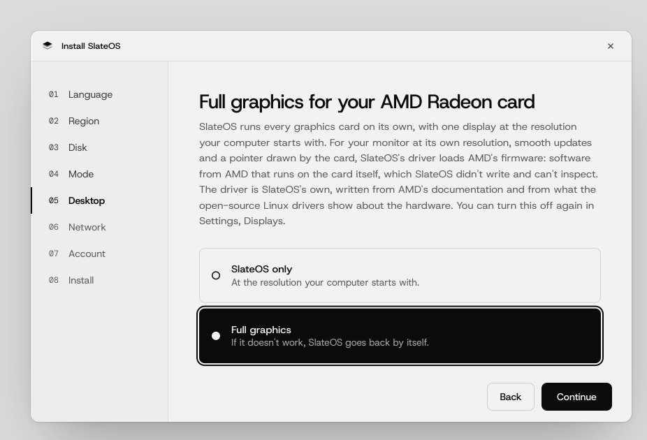
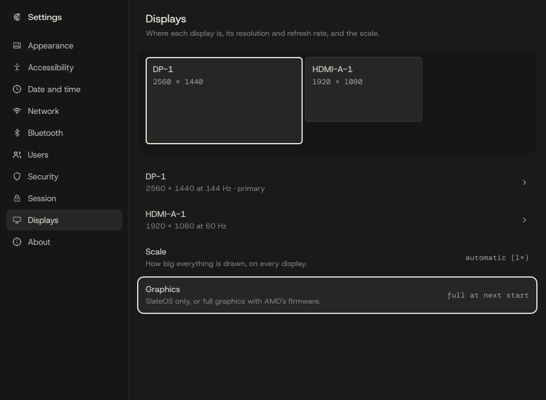
If the screen looks right, keep it. Otherwise SlateOS goes back to standard graphics by itself.
The installer's Desktop step and Settings › Displays, rendered by SlateOS. The question on the right is a model of the first start.
Strata's look is written down to the pixel and the hex value, and the code draws exactly that. These are crops of the screenshots above, enlarged with every pixel kept square.
Ten-pixel corners, a one-pixel outline that brightens when the window has focus, and the app's name beside the path it's working on.
A selected row becomes a chalk block with dark text. Never a colour, and only ever on small things, so it reads at a glance without glaring.
When something wants to change the system, Strata draws the question itself. Its header is reserved, so no app can paint a lookalike and catch your password.
The top bar follows the focused window. A shield and "slate mode" for SlateOS's own programs, a split pane and "linux" for software in the Linux domain.
Files, Terminal, Text Editor, Calendar, Contacts, System Monitor, Disks, Software Updater, App Center, Calculator, Clock, Help and more. Each one is a small native program on a shared kit, and each one follows your theme.
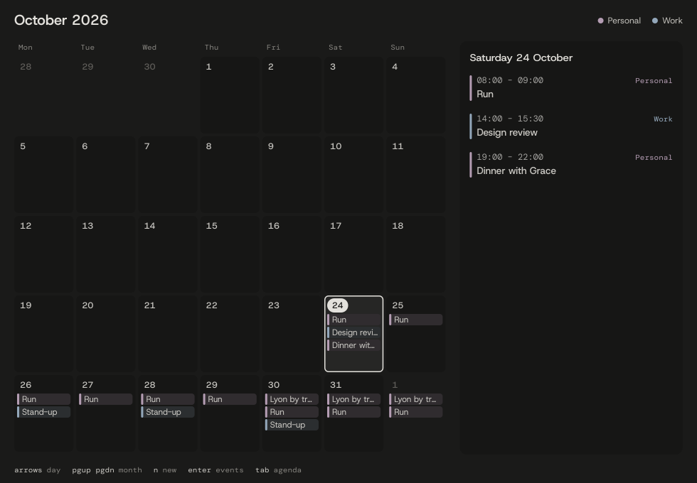
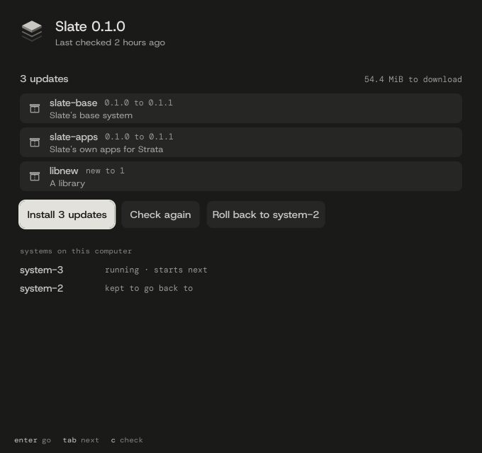
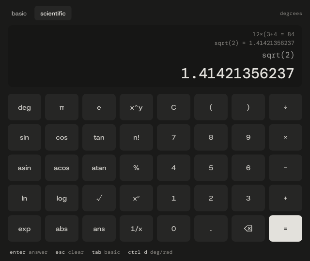
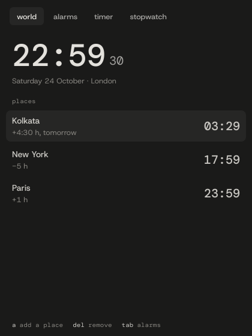
SlateFS is Slate's own copy-on-write filesystem. An update is written beside the running system, never over it. The next boot is a trial: if it fails, the kernel starts the last good system by itself, and every earlier one waits in the boot menu.
The parts most systems borrow, SlateOS writes. Each tool is a clean-room clone of the behaviour you know, tested side by side against the originals.
Monolithic and multi-core, with its own memory manager, scheduler and virtual filesystem.
POSIX sh with most of bash. Checked against bash, script by script.
SysV-style runlevels you already know, with supervision that restarts what crashes.
Signed indexes, real dependency resolution and quick installs.
Copy-on-write, checksummed, with snapshots and atomic updates.
Its own bootloader, with a graphical menu that starts other systems too.
Window manager and display server in one, with its own apps.
Anti-aliased drawing, soft shadows and its own TrueType text renderer.
A C library written in Rust, for programs built for Slate.
TCP/IP, DNS and TLS 1.3 written from the RFCs, tested by wiring stacks together.
Its own SSH server, from the protocol documents up.
Full read and write, with every write checked by the reference tools.
Mode setting, a hardware pointer, and window compositing on AMD's copy engine and its own GPU shaders.
Rules through the nf_tables interface that Linux's tools speak. Inbound is closed but for SSH.
Graphical and text installers on one engine, beside another system or on a whole disk.
Files, Terminal, Calendar, Disks, App Center and more, written for Strata.
The exceptions are a few vetted cryptographic primitives and device firmware, such as AMD's, which full graphics loads only if you ask for it. Everything else that ships is SlateOS's own.
These are budgets, and they're kept like tests. When one slips, it's treated as a failure, the same as a broken feature.
Measured in a virtual machine with 4 CPUs and 4 GiB, on every full test run. The desktop has frame budgets of its own, at 4K too.
Start it from a USB stick and try the desktop from memory before you change a thing. When you install, SlateOS can take the free space next to the system you have, and both will be in the boot menu.
NVMe SSD · 1 TB · it holds Windows
Every driver is written for SlateOS, so it works with some hardware and not yet with the rest. Check your PC first: a 64-bit Intel or AMD machine, in UEFI or legacy BIOS mode, with Secure Boot off.
The full table, and what to do when something goes wrong, are in the install guide. It also runs in QEMU, virt-manager and GNOME Boxes.
SlateOS is young and in active development, with laptop support next. There are no downloads yet: make builds the install media from source, a USB image and an ISO.
git clone https://github.com/neuralpunk/slate-oscd slate-os && maketarget/slate-usb.img to a USB stick, byte for byte, with dd or GNOME Disks.make run boots it in QEMU.The first build fetches the pinned Rust toolchain and takes a few minutes. Installing erases the disk you choose unless you install beside what is on it: back up first.